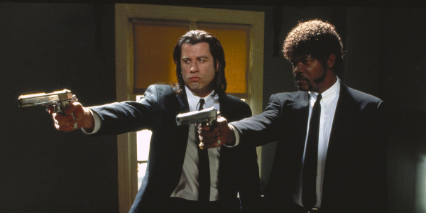
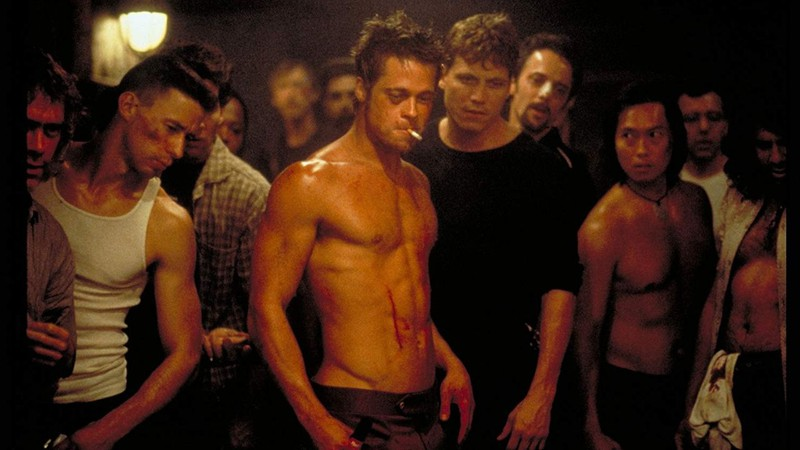
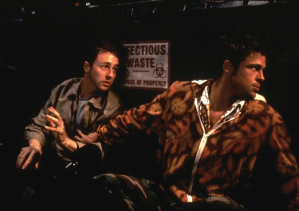
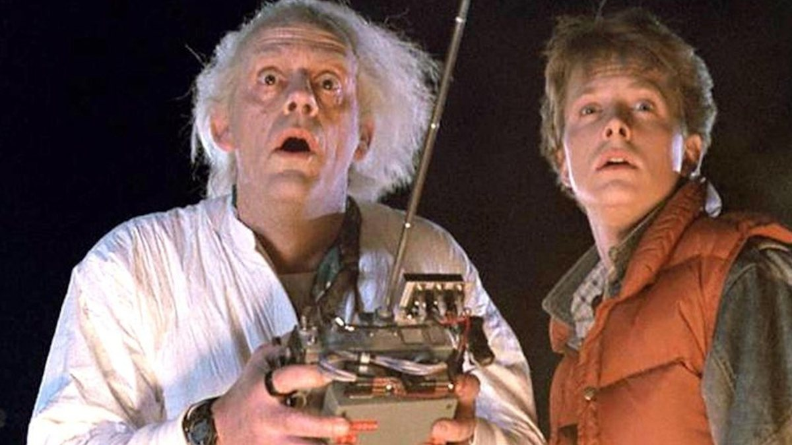
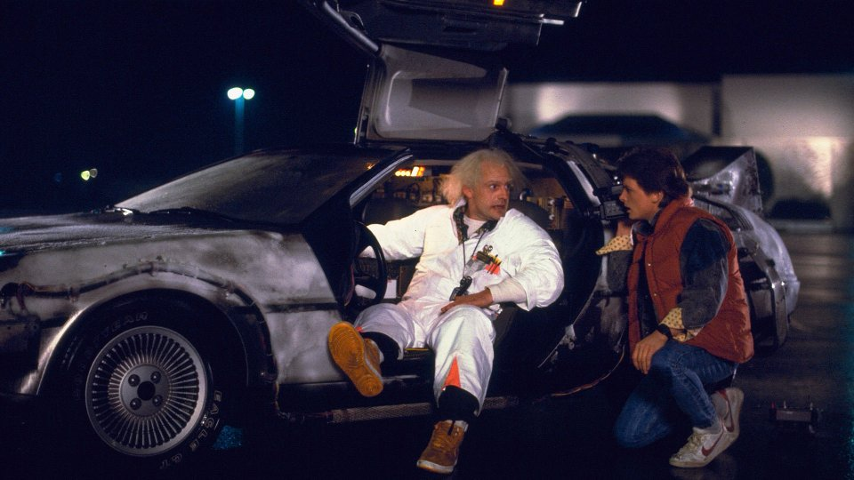

Pulp Fiction
Vincent Vega e Jules Winnfield são dois mafiosos com a missão de fazer uma cobrança a mando do chefe, Marsellus Wallace. Vincent deve levar Mia, mulher de seu chefe para se divertir enquanto ele viaja. Enquanto isso, Butch Coolidge, um pugilista que foi comprado por Marsellus para perder uma luta, não cumpre a sua parte no acordo e agora precisa fugir do mafioso.
Resumo:
No filme, Vincent Vega (John Travolta) e Jules Winnfield (Samuel L. Jackson) são dois assassinos profissionais que trabalham fazendo cobranças para Marsellus Wallace (Ving Rhames), um poderosos gângster. Vega é forçado a sair com a garota do chefe, temendo passar dos limites; enquanto isso, o pugilista Butch Coolidge (Bruce Willis) se mete em apuros por ganhar uma luta que deveria perder. Tarantino tem o talento de transformar o básico, em uma estrutura narrativa que se desdobra entre três histórias paralelas que inevitavelmente acabam se encontrando, apresentando um total domínio sobre a câmera, montagem e a sempre presente e perfeita trilha sonora. São tantos momentos inesquecíveis neste filme, que fica difícil citar apenas um: o casal de assaltantes que abre e fecha o filme, a dupla de assassinos que é uma das mais icônicas da história do cinema, o lutador de boxe que se depara em um dos trechos mais malucos do filme, a esposa de um chefão do crime que passa por uma eletrizante overdose de heroína e para fechar, um "resolvedor de problemas" que precisa lidar com uma situação que envolve sangue e pedaços de cérebro no banco traseiro de um carro.
Veja uma das cenas do filme:
Clube da Luta
Um homem deprimido que sofre de insônia conhece um estranho vendedor chamado Tyler Durden e se vê morando em uma casa suja depois que seu perfeito apartamento é destruído. A dupla forma um clube com regras rígidas onde homens lutam. A parceria perfeita é comprometida quando uma mulher, Marla, atrai a atenção de Tyler.
Resumo:
O filme Clube da Luta, um filme polêmico, decorre sobre um jovem (Edward Norton), que como um indivíduo participante da sociedade consumista e repleta de regras, atinge o limite máximo que sua mente consegue suportar. Quando começa a sentir sintomas físicos, como a insônia permanente, entende que só pode viver se estiver em contato com a verdadeira realidade do mundo.
Para isso, cria uma nova identidade (interpretada por Brad Pitt), que constrói uma linha de raciocínio lógica e surpreendente, que mostra a vida social através de uma visão crítica. Os dois protagonistas agem como se fossem dois indivíduos diferentes tipo "bom-bom e mau-mau". Com suas atitudes de revolta a máquina devoradora da rotina humana, querem experimentar o máximo para sentirem-se vivos e desmantelando os padrões sociais. Logo, uma legião de fãs começam a segui-los, promovendo lutas entre eles somente para sentirem alguma emoção nas suas tediosas vidas.
Por todo lugar surgiram os famosos "clube da luta" e o nome de seu criador tornou-se uma lenda. Com a intenção de destruir o mundo capitalista, começa a recrutar de forma rígida, homens que tinham que provar sua devoção à causa. O local de reunião do grupo ficava na casa semi-demolida em que moravam. Dali saiam planos (que eu duvido que nós também não gostaríamos de realizar), como a destruição de tudo que representasse a burguesia consumista e fútil.
Os seus projetos alarmaram as autoridades - somente por um pequeno detalhe eles os deixaram em paz, quem as autoridades perseguiam eram seus jardineiros, lixeiros, carteiros, recepcionistas, e estavam cercados por todos os lados dos participantes do clube da luta. Seu plano foi tão bem arquitetado que deixou avisado que se ele negasse que ele era o líder do movimento, seus participantes deveriam capá-lo. Aos poucos o bom moço (Edward Norton), compreendeu que ele e seu amigo determinado, era na verdade uma pessoa só. E que tudo partia de sua mente, toda revolta e repulsa do estilo de vida capitalista, estava guardado dentro de si. Ele somente deixou tudo vir à tona através de outra personalidade. O filme termina quando, agora ele mesmo assume o movimento de destruição.
De Volta pro Futuro
Marty McFly, um adolescente de uma pequena cidade californiana, é transportado para a década de 1950 quando a experiência do excêntrico cientista Doc Brown dá errado. Viajando no tempo em um carro modificado, Marty conhece versões jovens de seus pais e precisa fazer com que eles se apaixonem, ou então ele deixará de existir. Para complicar, Marty precisa voltar para casa a tempo de salvar o cientista.
Resumo:
De Volta Para o Futuro é um filme de 1985, dirigido Robert Zemeckis e escrito por ele e Michael Gale. A história apresenta a aventura de Marty McFly preso no passado e bagunçando o futuro. Para poder voltar ele vai atrás do criador da máquina que o levou para o passado, Dr. Emmett Brown.
Preso em 1955, ele precisa fazer com que seus pais se conheçam e precisa “capturar” um raio para voltar para 1985. No meio da viagem há muitas referências à cultura pop, geek e nerd, Martin toca Johnny B. Goode cinco anos antes do lançamento e se passa por Darth Vader.
A máquina do tempo é um DeLorean DMC-12 com um capacitor de fluxo, que pode deslocar o carro no tempo, através do uso de 1,21 gigawatts por fissão nuclear. Martin volta para 1955 usando a máquina para fugir de terroristas, que mataram o Dr. Emmett Brown.
Uma vez no passado, ele salva o pai de ser atropelado e impede que ele conheça a sua futura esposa, e mãe do Martin. O filme faturou cerca de 380 milhões de dólares e foi literalmente digno do primeiro escalão do estado americano. No cinema, assistindo ao filme, o presidente Ronald Reagan fez com que rebobinassem a cena que faz referencia a ele como presidente em 1985.